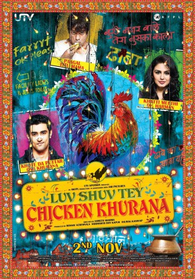

#9321 Nichts geht über Chicken Khurana
Alternativ: luv shuv tey chicken khurana
 
 IMDB-Wertung: 6.6 / 10
IMDB-Wertung: 6.6 / 10  Metascore: 0
Metascore: 0 
Omi Khurana's London dream has just ended. On the run from a dangerous UK gangster who he owes money to, Omi returns to his native village in Punjab, pretending to be a well-heeled London lawyer. Much has changed since Omi ran away from home a decade back after stealing money from his doting grandfather, Darji. The old man has since become senile and most importantly, forgotten the secret recipe of "Chicken Khurana" a dish that made the Khurana dhaba (restaurant) famous across Punjab. Omi's childhood sweetheart, Harman is soon to be married to his cousin, Jeet, though neither seems too happy about it. Adding to the quirkiness of the Khurana family is a free loader uncle, Titu, who once did a stint at a mental asylum. Will Omi be able to cover his deceit and lies for long, even as he tries to recover the lost recipe of Chicken Khurana - the family's only hope to reclaim their pride & wealth.
Jahr: 2012
Dauer: 109 Minuten
FSK:
Land: Indien Studio: KVH Media GroupTonspuren:
Untertitel:
Auflösung: 1080p (1920x816) Größe: 3194 MB
Genre: Komödie
Regisseur: Sameer Sharma
Drehbuch: Sumit Batheja
Soundtrack: Amit Trivedi
Darsteller:
- Kunal Kapoor als Omi Khurana
- Huma Qureshi als Harman
- Vinod Nagpal als Daar ji
- Rajesh Sharma als Titu Mamaji
- Herry Tangiri als Manty
- Vipin Sharma als Kehar Singh
- Mukesh Chhabra als Lovely
- Nimrat Kaur als Muskaan Khurana
 Sophie Karl als Bartender
Sophie Karl als Bartender- Blazena Kovalikova als Girlfriend
- Zachary Coffin als Businessman at the Bar
- Vicky Kaushal als
- Rahul Bagga als Jeet Khurana
- Rajendra Sethi als Hemraj Khurana
- Seema Kaushal als Lata Khurana
- Anjum Batra als Dalidri
- Dolly Ahluwalia als Buaji
- Anangsha Biswas als Shama Chatterjee
- Munish Makhija als Shanty
- Faisal Rashid als young Omi
- Gurpreet Brar als Harman's mother
- Peter Wong als Chinese man at the bar
- Michael Chang als Chinese man at the bar
- Balwinder Singh als Harman's father
- Mandeep Kaur als Rimpy's mother
- Kishore als Old man at funeral
- John Duggan als Pub customer
- Natasha Jenssen als Girlfriend of Gangster
- Rajinder Sharma Nanu als
- Rosy als Patient
Datei: X:\2012(N-Z)\Nichts geht über Chicken Khurana (2012, FSK, 1920x816).mkv seit 27.07.2018
Festplatte: HD 2012(N-Z)-2013(A-H)
 Es gibt insgesamt 138 Filme in der Gruppe '2012(N-Z)'
Es gibt insgesamt 138 Filme in der Gruppe '2012(N-Z)'